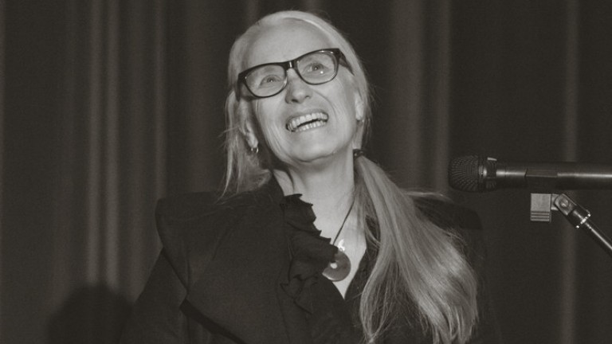

Jane Campion
Obsessed with lunatic women.

"The anthropologist sees coolly and dispassionately, the artist translates the spectacle into images unlike anyone else's."
Here's a time line of Campion's life:
ENGLISH / CHINESE
- 1954 - Born in Wellington, New Zealand. Her mother is Edith Campion (née Beverley Georgette Hannah), an actress, writer, and heiress and an orphan.
- 1975 - Though grew up in the world of New Zealand theatre, she initially rejected the idea of a career in the dramatic arts and graduated instead with a Bachelor of Arts in Anthropology from Victoria University of Wellington.
- 1975 - Attempted to go to an art school in Venice, but all sorts of complicated issues turned up.
- 1976 - Finally enrolled in the Chelsea Art School in London and traveled throughout Europe.
- 1977 - Back to Australia, started as a graduate student in visual arts (painting) from the Sydney College of the Arts at the University of Sydney.
- 1980 - Started making short films out of direct passion since painting's limit dissatisfied her.
- 1984 - Graduated from the Australian Film, Television and Radio School, where she made several more short films.
- 1986 - Her first short film, Peel (1982), won the Short Film Palme d'Or at the Cannes Film Festival. After graduation, she also directed an episode for ABC's light entertainment series Dancing Daze, which led to her first TV film, Two Friends.
- 1989 - Her feature debut, Sweetie, won international awards.
- 1990 - Further recognition came with An Angel at My Table, a biopic about the life of New Zealand writer Janet Frame, from a screenplay written by Laura Jones.
- 1993 - Her third feature The Piano won the Palme d'Or at the Cannes Film Festival, Best Director from the Australian Film Institute.
- 1994 - At the 66th Academy Awards, The Piano won the Best Original Screenplay, and she was the second woman ever to be nominated for Best Director.
- 1996 - Made the film The Portrait of a Lady, based on the Henry James novel, featured Nicole Kidman.
- 1999 - Made Holy Smoke!, this time with Kate Winslet as the female lead.
- 2003 - Wrote and directed In the Cut, an erotic thriller based on Susanna Moore's bestseller, provided Meg Ryan an opportunity to depart from her more familiar onscreen persona.
- 2009 - Wrote and directed Bright Star, a biographical drama about poet John Keats and his lover Fanny Brawne, was shown at the Cannes Film Festival.
- 2013 - Created, wrote, and directed the TV mini-series Top of the Lake. She was nominated for the Primetime Emmy Award for Outstanding Directing for a Miniseries, Movie or a Dramatic Special.
- 2014 - Head of the jury for the main competition section of the Cannes Film Festival.
- 2017 - Co-direct and co-write Top of the Lake: China Girl was released. Her daughter Alice Englert features in it.
- 2021 - Her new film The Power of the Dog was premiered at the 78th Venice International Film Festival, where Campion was awarded the Silver Lion for Best Direction. It was written and directed by her as an adaptation of Thomas Savage's novel.
- 2022 - The Power of the Dog received 12 nominations at the 94th Academy Awards. She became the first woman to receive multiple Best Director nominations, and she won Best Director for the film.
"But I felt I had to distinguish myself from the family. You know? Besides, I thought acting quite frivolous. Now I'm grateful that I was raised in an atmosphere which had some sort of gaiety to it. But at the time, I thought that these people were . . . insincere."
"This boy I knew was arrested for cocaine trafficking. And I couldn't speak Italian very well. And I was going to the school, but I wasn't really enrolled because no one could work out who I was or what I was supposed to be doing there. And then it was winter, and they had the agua alta, the water that comes up over your gum boots. Then, of course, I was under suspicion, too, because I was a friend of his. He told me later that his mother had sent him some potato puree from Hungary and that it had been misinterpreted. But that sounds a little unlikely to me now, you know?"
"I didn't like England... I had to put a big lid on myself. But I thought: 'You've just got to live with this. This is the rite of passage to being an adult -- misery'.
"I have a complicated theory for why I was so depressed -- that in the Southern Hemisphere you can use the weather to relate your moods with. If you did that in England, where it's continuously bleak, you'd just die.
"Also, there's a fury I have when I hear an English upper-class voice -- that voice that speaks really loudly about its 'dahhhhggs.' Grrrr!"
"I have a complicated theory for why I was so depressed -- that in the Southern Hemisphere you can use the weather to relate your moods with. If you did that in England, where it's continuously bleak, you'd just die.
"Also, there's a fury I have when I hear an English upper-class voice -- that voice that speaks really loudly about its 'dahhhhggs.' Grrrr!"
"The art school I went to had young tutors who were into minimalist and conceptual art. They made everybody rethink their thinking about everything, which sent some people into sort of schizophrenic binges. But it was a brilliantly exciting atmosphere. You could do anything -- installations, performance, whatever.
"First I was a bit at sea. Then, suddenly, for the first time in my life I really tried to do something. I'd never had a commitment to my ability; I knew there were people cleverer than me. What I was looking to do was to just learn enough so that I could in some way be supportive of somebody who really was gifted."
"First I was a bit at sea. Then, suddenly, for the first time in my life I really tried to do something. I'd never had a commitment to my ability; I knew there were people cleverer than me. What I was looking to do was to just learn enough so that I could in some way be supportive of somebody who really was gifted."
"I decided to try and make my artwork directly about the things that I'd rush home to ruminate about. Things like confusions about sex and intimacy, for instance. I was painting at the time, crude sexual paintings, I suppose, with some feminist imagery as well.
"There was a lot of performance stuff going on, too, so I used to put on little plays about women and sex -- things like that. Pretty weird, really. Next, I decided that instead of being in a play I'd film it."
"There was a lot of performance stuff going on, too, so I used to put on little plays about women and sex -- things like that. Pretty weird, really. Next, I decided that instead of being in a play I'd film it."
In an interview with Jan Lisa Huttner, Campion discussed how she focused on Fanny's side of the story, pointing out that only two of the film's scenes did not feature her.
When Canadian filmmaker Xavier Dolan received the Prix du Jury for his film Mommy, he said that Campion's The Piano "made me want to write roles for women—beautiful women with soul, will and strength, not victims or objects." Campion responded by rising from her seat to give him a hug.
If you have time, you should read more about this incredible woman on her Wikipedia entry and The New York Times interview.